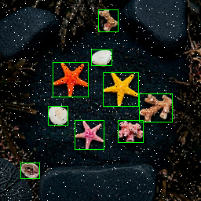
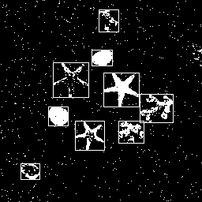

Part 3 目標
Part 2 已經證明 RTL 功能正確；Part 3 要確認 RTL 經過 synthesis / gate-level 化之後，功能仍然完全一致。
design.sv→
Yosys Synthesis→
Gate-Level Netlist→
65,536 Pixel GLS→
gate_binary.txt→
Golden Compare→
PASS
核心判定：Gate-Level 結果與 Part 2 的 golden_binary.txt 逐 pixel 比較，Mismatch = 0 才算通過。
與 Part 2 的關係
| 項目 | Part 2 | Part 3 |
|---|---|---|
| 驗證對象 | RTL：design.sv | Gate / Structural Netlist |
| 輸入 | gray.hex | 同一份 gray.hex |
| Pixel 數 | 65,536 | 65,536 |
| Golden Model | golden_binary.txt | 完全沿用同一份 |
| 輸出 | rtl_binary.txt | gate_binary.txt |
| 判定 | RTL vs Golden | Gate-Level vs Golden |
本 Part 3 套件使用的影像
Color Input

Grayscale

Golden Binary

Gate Binary
執行 compare_gate.py 後會產生：
images/sample_binary_gate.png完整操作流程
| Step | 動作 | 輸入 | 輸出 |
|---|---|---|---|
| 1 | 讀取 RTL | design.sv | Yosys internal RTL |
| 2 | Yosys synthesis / optimize | RTL | Generic gate logic |
| 3 | 輸出 netlist | Yosys internal netlist | binarization_yosys.v |
| 4 | Gate-Level compile | gate netlist + testbench + cells | simv_gate |
| 5 | Gate-Level Simulation | gray.hex | gate_binary.txt |
| 6 | Python compare | gate output + Golden | Mismatch / Accuracy / PASS |
Yosys 指令表
| 順序 | Yosys 指令 | 作用 |
|---|---|---|
| ① | read_verilog -sv design.sv | 讀入 SystemVerilog RTL。 |
| ② | hierarchy -check -top binarization | 指定 top module，並檢查 hierarchy。 |
| ③ | proc | 把 always/process 轉為內部 mux / register 等表示。 |
| ④ | opt | 最佳化邏輯，移除冗餘結構。 |
| ⑤ | fsm | 偵測與處理 FSM；本設計沒有複雜 FSM，但保留標準流程。 |
| ⑥ | memory | 處理 memory abstraction；本設計核心 RTL 無 memory。 |
| ⑦ | techmap | 將高階 internal cells 轉成較基本的 logic cells。 |
| ⑧ | abc -g AND,OR,XOR,XNOR,NAND,NOR,MUX | 用 ABC 將 combinational logic 映射成指定的 generic gates。 |
| ⑨ | clean | 移除未使用 wire / cell。 |
| ⑩ | stat | 顯示合成後 cell / wire 統計。 |
| ⑪ | write_verilog -noattr binarization_yosys.v | 輸出 synthesized Verilog netlist。 |
| ⑫ | write_json binarization_yosys.json | 輸出 JSON netlist，方便後續視覺化或工具分析。 |
yosys -s synthesis.ysGate-Level Simulation
這個 ZIP 另外附了一份 binarization_gate_reference.v，它是以小型 generic cells 組成的 structural reference netlist，讓你即使還沒有安裝 Yosys，也可以立即完成整個 GLS + Golden Compare 流程。
重要：binarization_gate_reference.v 是教學用 structural reference，不應被誤稱為「Yosys 實際輸出」。真正的 Yosys 輸出由 synthesis.ys 產生為 binarization_yosys.v。
cd code
cp ../data/gray.hex .
iverilog -g2012 -o simv_gate generic_cells.v binarization_gate_reference.v testbench_gate.sv
vvp simv_gate
python compare_gate.pyGate-Level PASS 驗證流程
gray.hex
│
▼
Gate-Level Netlist
│
▼
testbench_gate.sv
│
▼
65,536 Pixel Simulation
│
▼
gate_binary.txt
│
├──────────────┐
▼ ▼
Gate Result golden_binary.txt
│ │
└──────┬───────┘
▼
compare_gate.py
│
▼
Mismatch = 0
Accuracy = 100.00%
PASS預期驗證輸出：
Total pixels: 65536
Mismatch pixels: 0
Accuracy: 100.00%
PASS每個檔案詳細說明
| 檔案 | 角色 | 詳細說明 |
|---|---|---|
code/design.sv | 原始 RTL | 與 Part 2 相同的 clocked binarization RTL，也是 synthesis 的輸入。 |
code/synthesis.ys | Yosys Script | 依序執行 read、hierarchy、proc、opt、techmap、ABC mapping、stat，最後輸出 Verilog/JSON netlist。 |
code/yosys_commands.txt | 指令速查 | 將 synthesis.ys 的主要命令列出，方便在 Yosys interactive shell 或 EDA Playground 教學時逐步執行。 |
code/binarization_gate_reference.v | Structural Reference | 用 INV / AND / XNOR / DFFRN 等 generic cells 建出 8-bit greater-or-equal comparator 與輸出 FF，可直接拿來做 GLS。 |
code/generic_cells.v | Generic Cell Library | 提供 reference structural netlist 所需的小型 cell behavioral models，讓 Icarus 能模擬這些 gate/cell。 |
code/testbench_gate.sv | Gate-Level Testbench | 讀取 65,536 筆 gray.hex，每個 pixel 經 gate netlist 後寫入 gate_binary.txt。 |
code/compare_gate.py | Gate vs Golden | 讀取 gate_binary.txt 與 Part 2 的 golden_binary.txt，逐 pixel 比較並產生 gate binary PNG。 |
code/run_part3.sh | Linux / Git Bash | 一鍵執行：複製 gray.hex、可選 Yosys synthesis、Icarus gate compile、vvp、Python compare。 |
code/run_part3.ps1 | Windows PowerShell | Windows 專用的一鍵 Part 3 執行腳本。 |
data/gray.hex | 輸入 pixel stream | 與 Part 2 完全相同的 256×256 grayscale pixels。 |
data/golden_binary.txt | Golden Model | 與 Part 2 完全相同的 Python 標準答案，確保 RTL 與 Gate-Level 使用同一參考基準。 |
images/sample_binary_gate.png | Gate 結果影像 | 執行 compare_gate.py 後才生成，用來視覺化 Gate-Level 65,536 筆輸出。 |
Windows PowerShell：完整執行
cd code
.\run_part3.ps1若沒有安裝 Yosys，腳本會跳過自動 synthesis，但仍可使用內附的 structural reference 完成 Gate-Level Verification。
手動逐步指令表
| 順序 | 指令 | 在做什麼 | 主要輸出 |
|---|---|---|---|
| ① | cd code | 進入 Part 3 程式資料夾。 | 目前目錄 = code/ |
| ② | cp ../data/gray.hex . | 複製 Part 2 同一份 grayscale pixel stream 到 simulator 工作目錄。 | gray.hex |
| ③ | yosys -s synthesis.ys | 執行 RTL synthesis，產生 Yosys netlist 與 report。 | binarization_yosys.v、JSON、統計 |
| ④ | iverilog -g2012 -o simv_gate generic_cells.v binarization_gate_reference.v testbench_gate.sv | 編譯 structural gate reference + cell models + Gate-Level TB。 | simv_gate |
| ⑤ | vvp simv_gate | 執行 65,536 pixel Gate-Level Simulation。 | gate_binary.txt |
| ⑥ | python compare_gate.py | Gate-Level output 與 Golden Model 逐 pixel 比較。 | sample_binary_gate.png、Mismatch、Accuracy、PASS/FAIL |
Part 3 完成後接什麼？
完成 Part 3 後，就可以進入 Part 4：Technology Library / Standard Cell Mapping → STA → P&R → Post-Layout。這時會開始加入真正的 Liberty standard-cell library、timing constraint、cell delay、面積與時序分析。